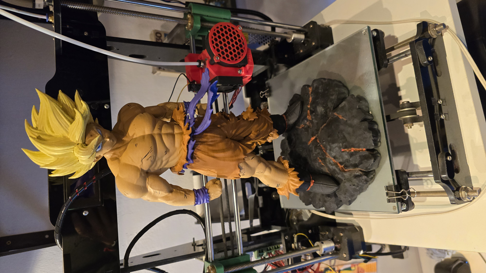
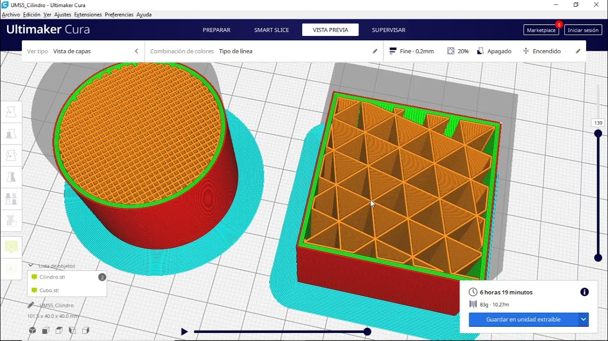

Estamos listos para fabricar tus piezas de uso industrial, comercial, técnico o bien tus repuestos en serie. Sabemos materializar tus ideas o proyectos de una manera rápida y productiva. Desde validaciones hasta mantenimiento industrial.
Te explicamos brevemente como es el proceso para hacer cualquier impresión 3D, desde el Diseño 3D hasta la Fabricación 3D. Hay que tener en cuenta que como todo proceso productivo tiene sus procesos que debemos respetar.
Paso 1 - Diseño 3D CAD Para poder realizar cualquier impresión 3D se debe realizar el Diseño 3D o Modelado 3D de la pieza que se pretende imprimir. En dicho paso le damos volumen y dimensión en un software CAD a cada pieza o parte que luego se fabricará mediante la impresión 3D. Cabe mencionar que el diseño 3D es perfecto para cualquier método de fabricación industrial, como mecanizado, tornería, inyección por molde, etc.
Paso 2 - Configuración En este paso importamos el archivo STL generado en el paso anterior y configuramos todos los parámetros de impresión necesarios dependiendo de varios factores como son la resolución, el uso de cada pieza, la resistencia que se pretende obtener, la funcionalidad de la pieza, la posición de impresión que se utilizará, sobre el material a utilizar ya que cada uno tiene distinta configuración.

Paso 3 - Impresión 3D Preparamos la máquina con el material y color necesario y ejecutamos el programa realizado en el paso anterior. Es importante destacar que la impresión 3D no trata de ejecutar un programa y listo. Es un proceso que requiere de varios pasos como la buena calibración de la máquina a utilizar, ya que por ejemplo una mala configuración puede generarnos problemas al querer imprimir una pieza. Cada pieza o parte es un mundo.